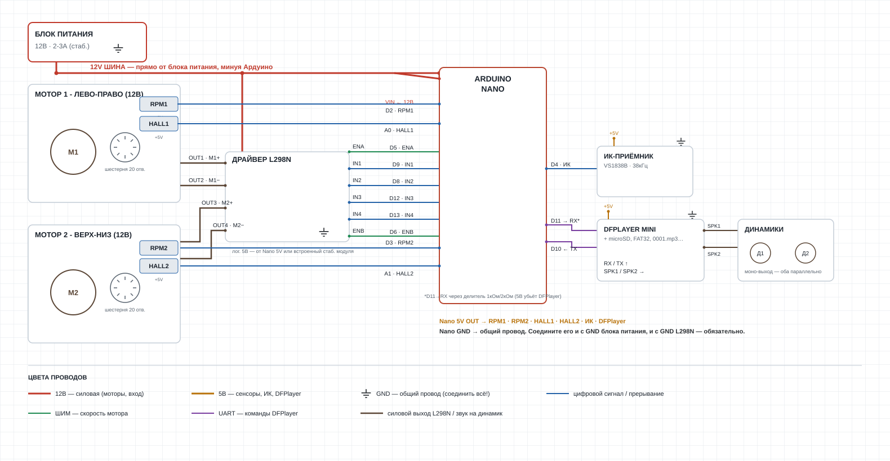

DIY-ремонт и модернизация
В детских электрокачелях и шезлонгах чаще всего выходит из строя именно плата управления — а найти её отдельно почти никогда нельзя. Моторы, редукторы и датчики при этом обычно живы. Мы показываем, как заменить мозг качелей на Arduino: схемы, готовый код, пошаговые гайды — по конкретным моделям.
Смотреть модели Код на GitHubКаждая модель — отдельная схема, распиновка и прошивка под неё. Список будет расти.

Замена штатной платы на Arduino Nano: 6 режимов качания, музыка и колыбельные через DFPlayer, управление двумя ИК-пультами одновременно, таймер автоотключения.
Один и тот же подход почти для любых электронных качелей с мотором и кривошипным механизмом.
Определяем моторы, датчики оборотов/положения, звуковой модуль — всё, что осталось рабочим после поломки платы.
Драйвер моторов, распиновка, безопасное разделение 12В и 5В линий — со схемой, которую можно повторить.
Готовый код с режимами качания, пультом ДУ и звуком — калибруется под конкретные моторы и остаётся открытым для доработки.
Если у вас сломались качели другой модели и не получается найти плату — напишите, что за модель и что именно не работает. Разберём и, если это в наших силах, добавим схему и гайд.
Проще всего — через Telegram-бота: заявки, подбор комплектующих и покупка гайда прямо там.
Написать ботуИли email: goshahits@gmail.com